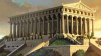
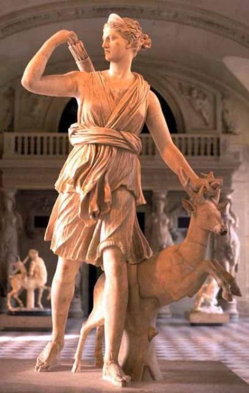
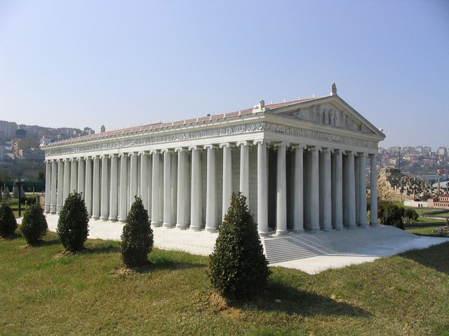
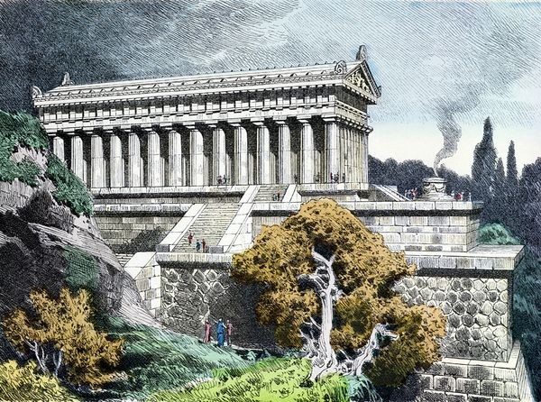
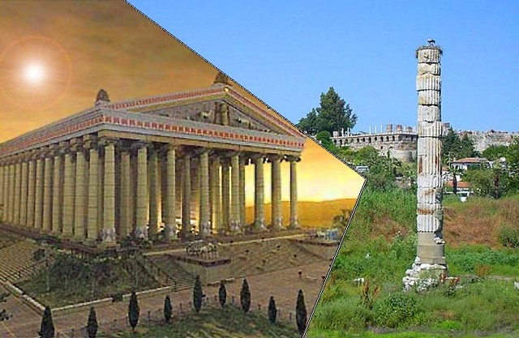
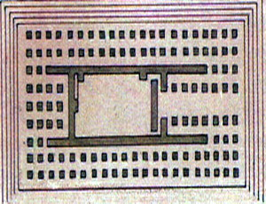

У далекій давнині грецький Ефес був великим торговим портом. І саме тут розташовувалося одне з семи стародавніх чудес світу - храм Артеміди Ефеської.
Згідно давньогрецької вірі Артеміда була богинею полювання і родючості, покровителькою всього живого на землі. Вона доглядала за звірами в лісі, стадами домашніх тварин, рослинами. Артеміда забезпечувала щасливий шлюб і допомогу при пологах.

Артеміда
На честь Артеміди в Ефесі на місці колишнього святилища карийской богині, також відповідає за родючість, був побудований храм. Храм Артеміди в Ефесі був настільки великим, що відразу ж потрапив в список семи чудес світу античного світу. Фінансування будівництва покрив лідійський цар Крез, будівельними справами керував архітектор з Кносса Харсифрон. При ньому встигли звести стіни і колони. Після його смерті пост головного архітектора прийняв його син Метаген. Останнім етапом будівництво керували Пеонит і Деметрій
Будівництво храму Артеміди було завершено в 550 році до нашої ери. Перед місцевими жителями відкрилося чудове видовище, подібного тут не будували ніколи. І хоча в даний час не можна відтворити колишнє оздоблення храму, можна бути впевненим, що кращі майстри свого часу, зайняті тут на роботах, не могли схибити. Сама статуя винуватиці споруди була виконана зі слонової кістки і золота.

Відтворити образ колишнього величного храму богині Артеміди в Ефесі вдалося тільки після проведення археологічних розкопок. Храм мав розміри 105 на 51 метр. Дах споруди підтримували 127 колон, кожна заввишки 18 метрів. За легендою кожна колона була подарована одним з 127 грецьких володарів.
Крім релігійних служінь в храмі кипіла фінансова і ділове життя. Це був незалежний від влади центр Ефеса, який підпорядковується місцевій колегії жерців.

У 356 році до нашої ери, коли народився знаменитий Олександр Македонський, храм Артеміди спалив ефеський житель Герострат. Мотив цього подвигу - залишитися в історії в пам'ять нащадкам. Палія після упіймання чекала найвища міра покарання. На додаток до неї було також вирішено викорінити ім'я цієї людини з історії. Але те, що заборонено, ще міцніше вмощується в пам'яті людей, а ім'я Герострата зараз є загальним.
До III століття до нашої ери чудо світу храм Артеміди в Греції вдалося відновити з ініціативи вищезгаданого Олександра Великого, але з приходом готовий він знову піддається руйнуванню. Пізніше з забороною язичницьких культів влади Візантії закривають храм. Потім починають поступово розбирати на будівельні матеріали, в результаті чого храм йде в небуття. На його місці була зведена християнська церква, але її також чекала доля руйнування.

31 жовтня 1869 року англійської археологу Вуду вдається знайти розташування колишнього храму Артеміди в Туреччині, і починаються розкопки. Зараз на його місці стоїть одна відновлена з уламків колона. Незважаючи на це, місце все одно приваблює тисячі туристів.
